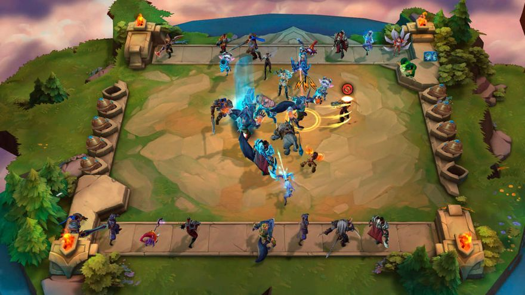
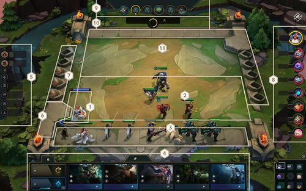

Teamfight Tactics (TFT)
Teamfight Tactics (TFT) es un videojuego auto battler desarrollado y publicado por Riot Games. Inicialmente lanzado como modo de juego para League of Legends para Windows y macOS el 26 de junio de 2019 y, se lanzó para Android y iOS el 19 de marzo de 2020, excluyendo el sureste de Asia, en el cual está retrasado para finales de 2020.¿Como jugar?
Basado en Dota Auto Chess, un mod para Dota 2, consiste en formar un equipo de hasta 9 campeones (es posible tener un equipo mayor con ayuda de objetos especiales) y durar el máximo tiempo posible intentando ser el último con vida.La arena consta de hexágonos, donde los jugadores pueden estratégicamente colocar los campeones según avanzan las rondas. Cada ronda, la batalla automáticamente comienza con dos jugadores emparejados aleatoriamente o contra la IA.El número de campeones que queden al finalizar la batalla se verá reflejado en el daño que sufrirá el perdedor, teniendo en cuenta también el nivel de estos. Gracias a una característica llamada «Shared Draft», cada cierto tiempo los jugadores tienen acceso a una salida donde por turnos, dependiendo de la posición en la partida, elegirán un campeón con un objeto; los dos jugadores con la salud más baja escogen primero.
Los jugadores acumulan oro durante las rondas, el cual se puede guardar para aumentar los intereses por ronda. Con este oro, se puede actualizar la tienda, comprar campeones o subir 4 de xp en el nivel. Del nivel que uno tenga dependerá el número de campeones que se puedan tener en el tablero, salvo algunas excepciones. Los campeones poseen orígenes y clases, los cuales se deben combinar para obtener bonificaciones.

